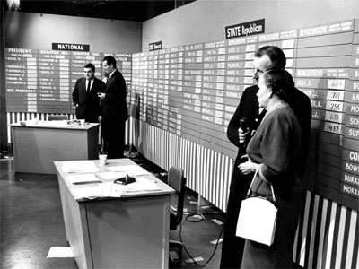
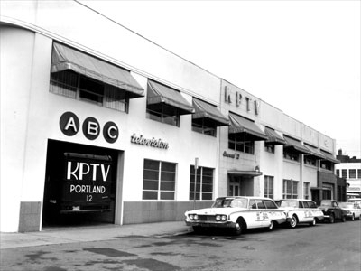

|

KPTV Scrapbook - 1960s
Memorable scenes from the past half-century.
|
 |
|
1960
Election
coverage, studio A. KPTV covered local, state and national election
results, all of which were hand-written and posted on a board
for the camera to view. Left rear: "News Central" anchorman
George Sanders interviews a man who could be Pierre Salinger, later press
secretary to President John F. Kennedy. Right front: Wallace Turner
interviews an unidentified woman. |
|
 |
|
1962
In 1959, KPTV
Channel 12 became an affiliate of the ABC Network. Luckily, all they had
to do was change the "N" to an "A." Several "News Central" cars parked in front and the remote truck in the
garage demonstrated KPTV's commitment to local news coverage. |
ONTO
THE 1970S>>
<<BACK
TO THE 1950S
BACK
TO
SCRAPBOOK
MAIN
PAGE
|